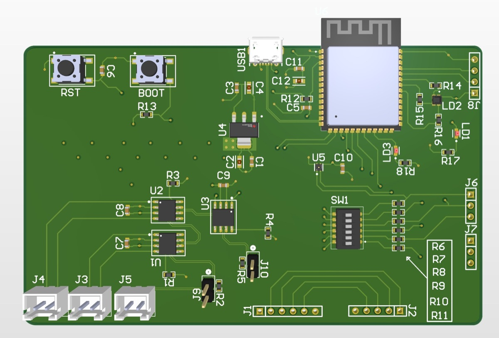
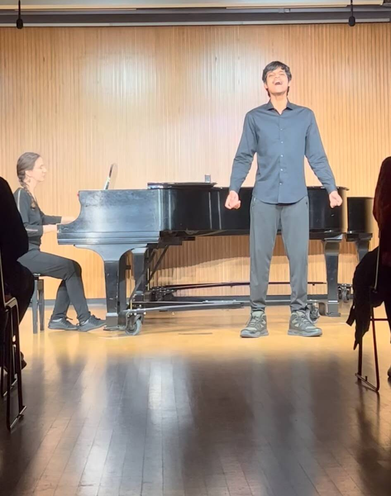

Embedded Systems & PCB Design
Microcontrollers · PCB layout · CAN · SPI · I²C · UART
Embedded Systems · Real-Time Firmware · Vehicle Electronics · PCB & Power Systems
I build PCBs and embedded firmware, from real-time vehicle controls to battery and power systems.

Embedded systems and real-time firmware, PCB design, vehicle communications, battery and power systems, and hardware/firmware integration.
Microcontrollers · PCB layout · CAN · SPI · I²C · UART
C/C++ · RTOS · CAN · Embedded Controls
BMS · Battery testing · Power electronics
Four projects with different levels of maturity and different kinds of engineering responsibility.
I designed a reusable ESP32-S3 board to make CAN, SPI, I²C, and UART testing more repeatable before integrating those interfaces into larger systems.
View project →I developed C/C++ real-time control software using RTOS tasks, CAN communications, and operating-state logic, alongside controller integration and lab testing.
View project →I led Orion BMS 2 integration and staged bench bring-up from initial CAN communication through one- and four-cell testing.
View project →I contribute CAN transceiver circuitry and CAN, STM32, and radar communications firmware across interfaces with the broader team system.
View project →Stereo Class-D Amplifier: I designed an LC noise filter before the differential-pair signal entered a summing amplifier and the feedback/correction loop.
Tutoring: I have helped students with ECE 231 and ECE 271, and with Physics I–III, including circuit analysis and other foundational topics.
Engineering is what I build. Music and hiking are important parts of who I am.
More about me →